Supplied unofficial study solution, not an official GTU answer key. Answers and teaching diagrams have not been independently verified. Use Enlarge image for small details.આ આપેલો બિનસત્તાવાર અભ્યાસ ઉકેલ છે, સત્તાવાર GTU જવાબવહી નથી. જવાબો અને આકૃતિઓની સ્વતંત્ર ચકાસણી થઈ નથી. વાંચવા માટે ચિત્ર મોટું કરો.
Electrical Wiring Estimating & Contracting
Q1 · Tools, safety and wiring types
Q.1 (a) List any six electrical wiring tools and explain their use. (3 marks)Q.1 (a) List any six electrical wiring tools and explain their use. (3 marks)3 marks૦૩ ગુણ
Definition: Wiring tools are insulated hand tools and test instruments used to install, joint and test wiring safely.
| Tool | Use |
|---|---|
| 1. Combination plier (insulated 1000V) | Cutting wire, gripping, twisting joints; lineman plier with side cutter. |
| 2. Screwdriver set + Line tester (neon) | Tighten terminals; tester glows on phase — only indication, not proof of dead. |
| 3. Wire stripper / Cable knife | Remove PVC/XLPE insulation without nicking copper/aluminium strands. |
| 4. Hammer, chisel, electric drill + bits | Make chase/groove in wall, drill for dowels, fix casing-conduit brackets. |
| 5. Measuring tape, try square, spirit level | Mark horizontal/vertical routes, maintain levels, estimate lengths. |
| 6. Megger / Multimeter / Test lamp | Measure insulation resistance (500V DC), continuity, voltage — prove installation healthy. |
Care: ISI marked, no cracked handles, sharp blades, calibrated meters, use 2-pole voltage tester + proving unit for dead-proof — neon alone not allowed.
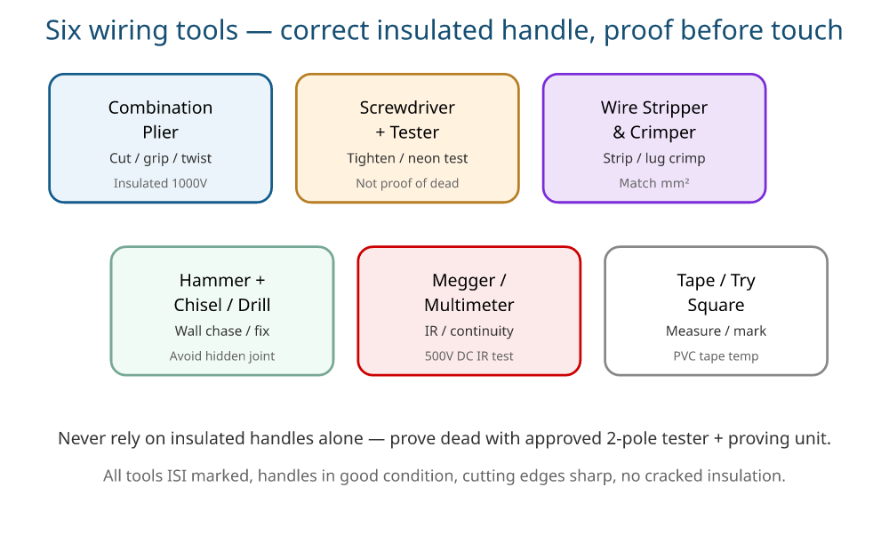
વ્યાખ્યા: Wiring tools એ insulated hand tools અને test instruments છે જે wiring ને safely install, joint અને test કરવા વપરાય છે.
| Tool | ઉપયોગ |
|---|---|
| 1. Combination Plier (1000V insulated) | Wire ને કાપવા, પકડવા અને twist કરવા; side cutter સાથે lineman plier. |
| 2. Screwdriver Set + Line Tester (neon) | Terminal ને tight કરવા; phase પર Tester glow થાય — માત્ર સંકેત, dead નો પુરાવો નહીં. |
| 3. Wire Stripper / Cable Knife | Copper/Aluminium ના strands ને scratch વગર PVC/XLPE insulation દૂર કરવા. |
| 4. Hammer, Chisel, Electric Drill + Bits | દીવાલમાં chase/groove બનાવવી, brackets માટે drilling, casing-conduit fix કરવી. |
| 5. Measuring Tape, Try Square, Spirit Level | Horizontal/vertical route નું marking, level જાળવવા, length નો અંદાજ કાઢવા. |
| 6. Megger / Multimeter / Test Lamp | Insulation resistance (500V DC), continuity, voltage માપવા — installation healthy છે કે નહીં તપાસવા. |
કાળજી: ISI marked Tools, તૂટેલા handle નહીં, ધાર sharp, meters calibrated, dead prove કરવા 2-pole voltage tester + proving unit વાપરો — માત્ર neon ન ચાલે.
Q.1 (b) Explain different safety accessories in electrical wiring system. (4 marks)Q.1 (b) Explain different safety accessories in electrical wiring system. (4 marks)4 marks૦૪ ગુણ
Safety accessories protect persons and property from shock, overload, short-circuit and fire.
| Accessory | Where / what it does |
|---|---|
| MCB (Miniature Circuit Breaker) | Overload + short-circuit protection per sub-circuit; trips in ms; resettable — replaces rewirable fuse. |
| ELCB / RCCB (30mA) | Leakage/earth-fault protection; trips if live–neutral imbalance → prevents shock/fire; test button monthly. |
| Isolator / Main switch (ICDP/TPN) | Manual on-off with visible isolation for maintenance; not auto trip for fault (separate). |
| Fuse / KitKat / HRC | Overcurrent cut-off; HRC handles high fault current without explosion. |
| Earthing (2 nos.) + Earth wire | Low-resistance path to earth (≤5Ω domestic) — fault current returns safely; bonds all metalwork. |
| Insulation accessories | PVC conduit/casing, grommets, bushes prevent chafing; insulating mats at DB, danger boards, proper terminations (lugs/ferrules). |
Rule: Every circuit has phase fuse/MCB + neutral link, continuous earth, polarity correct (switch in phase only), no joints in inaccessible places.
Safety accessories વ્યક્તિ અને સંપત્તિને shock, overload, short-circuit અને fire થી બચાવે છે.
| Accessory | ક્યાં / શું કામ |
|---|---|
| MCB (Miniature Circuit Breaker) | દરેક sub-circuit માટે overload + short-circuit protection; milliseconds માં trip; resettable — rewirable fuse ને બદલે. |
| ELCB / RCCB (30mA) | Leakage/earth-fault protection; live–neutral imbalance હોય તો trip → shock/fire અટકાવે; દર મહિને test button દબાવો. |
| Isolator / Main Switch (ICDP/TPN) | Maintenance માટે manual on-off visible isolation સાથે; fault પર auto trip નહીં (અલગ protection). |
| Fuse / KitKat / HRC | Overcurrent cut-off; HRC blast વગર high fault current handle કરે. |
| Earthing (2 નંગ) + Earth Wire | Earth સુધી low-resistance path (≤5Ω domestic) — fault current safely પાછો જાય; બધી metalwork bonded. |
| Insulation Accessories | PVC conduit/casing, grommets, bushes wire ને ઘસાવાથી બચાવે; DB પાસે insulating mats, danger boards, lugs/ferrules સાથે proper terminations. |
નિયમ: દરેક circuit માં phase fuse/MCB + neutral link, સતત earth, polarity સાચી (માત્ર phase માં Switch), inaccessible જગ્યાએ joints નહીં.
Q.1 (c) Illustrate staircase wiring and godown wiring with neat sketches. (7 marks)Q.1 (c) Illustrate staircase wiring and godown wiring with neat sketches. (7 marks)7 marks૦૭ ગુણ
Staircase wiring (two-point control): One lamp controlled from two places (ground & first floor) using two 2-way (SPDT) switches.
- Phase → COM of SW1, L1–L1 and L2–L2 travellers between switches, COM of SW2 → Lamp → Neutral.
- Both switches in same position (both L1 or both L2) = Lamp ON; different = OFF. Truth table makes corridor light switchable from either floor.
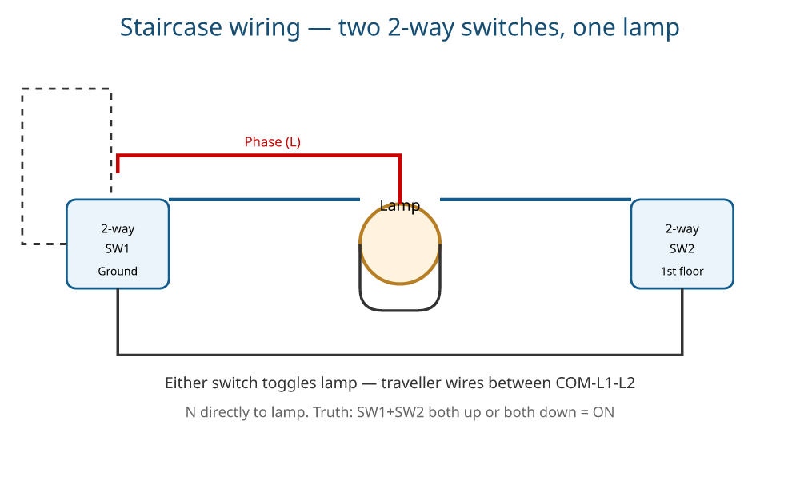
Godown wiring (sequential control): Long store with n doors — each entry ONs its lamp while OFFing previous.
- Wiring: First switch is 2-way, middle (n-2) are SPDT intermediate-type, last is also SPDT but output feeds lamp chain.
- Operation: Person enters Room-1 → SW1 → L1 ON. Moves to Room-2 → SW2 toggles → L1 OFF, L2 ON ... Entering next room automatically extinguishes earlier to save power. Last switch leaves only its lamp on.
- All neutrals common. No intermediate lamp stays ON unnecessarily — ideal for warehouses, long passages.
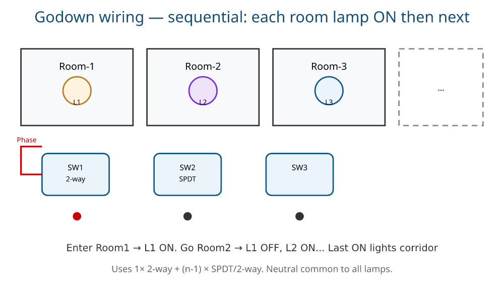
Staircase Wiring (બે-જગ્યાએથી control): એક Lamp ને બે જગ્યાએથી (ground & પહેલો માળ) બે 2-way (SPDT) Switches દ્વારા control.
- Phase → SW1 નો COM, L1–L1 અને L2–L2 travellers બંને Switches વચ્ચે, SW2 નો COM → Lamp → Neutral.
- બંને Switches એક જ position (બંને L1 અથવા બંને L2) = Lamp ON; અલગ = OFF. કોઈપણ માળેથી corridor light ON/OFF કરી શકાય.
Godown Wiring (ક્રમિક control): લાંબા store માં n દરવાજા — દરેક entry તેનો Lamp ON કરે અને પહેલાનો OFF કરે.
- Wiring: પહેલો Switch 2-way, વચ્ચેના (n-2) SPDT intermediate-type, છેલ્લો પણ SPDT પણ output lamp chain ને આપે.
- Operation: Room-1 માં પ્રવેશ → SW1 → L1 ON. Room-2 તરફ → SW2 toggle → L1 OFF, L2 ON ... આગળ જતાં પહેલાનો auto extinguish — power બચે. છેલ્લો Switch માત્ર તેનો lamp ON રાખે.
- બધા Neutrals common. કોઈ lamp નકામો ON ન રહે — warehouse, લાંબા passages માટે ideal.
Q.1 (c) OR What is estimation? List abilities of a good estimator. Compare between approximate and scientific estimation. (7 marks)Q.1 (c) OR What is estimation? List abilities of a good estimator. Compare between approximate and scientific estimation. (7 marks)7 marks૦૭ ગુણ
Estimation = systematic calculation of quantities, specifications and costs of labour + material required to complete an electrical installation as per plan, IE rules and market rates. It includes quantity take-off, rate analysis, overheads, profit, contingencies and tender documents.
Abilities of good estimator:
- Reads architectural/electrical drawings, NEC/IE rules, SOR correctly; knows symbols, legends, DB schedule.
- Accurate measurement of routes (horizontal + risers + drops + tails) and conductor fill; considers grouping, temperature, derating.
- Knows current material specs, makes/models, prices, labour rates, W/M charges — keeps data updated.
- Honest, methodical, checks arithmetic, allows contingency (3–5%) and supervision, prepares clear schedule & tender.
- Communicates well with client, contractor, supplier; manages time, negotiates, handles variations.
| Aspect | Approximate (rough) estimate | Scientific (detailed) estimate |
|---|---|---|
| Basis | Thumb rules: per point, per m², plinth area, past cost/kW | Detailed measurement from drawing: length × rate, point-wise, item-wise |
| Accuracy | ±20–30%; for budget approval only | ±5–10%; for tender, ordering, execution |
| Time | Quick (hours) | Time-taking (days); needs full data & site visit |
| Documents | Single figure / short note | BOQ, specifications, rate analysis, drawings, test reports |
Use: Approximate at proposal stage; scientific for contract and material ordering.
Estimation એટલે plan, IE rules અને market rates પ્રમાણે electrical installation પૂર્ણ કરવા જરૂરી labour + material ના quantities, specifications અને costs ની વ્યવસ્થિત ગણતરી. તેમાં quantity take-off, rate analysis, overheads, profit, contingencies અને tender documents આવે.
સારા Estimator ની ક્ષમતાઓ:
- Architectural/electrical drawings, NEC/IE rules, SOR બરાબર વાંચી શકે; symbols, legends, DB schedule જાણે.
- Routes (horizontal + risers + drops + tails) અને conductor fill નું accurate measurement; grouping, temperature, derating ધ્યાનમાં લે.
- હાલની material specs, makes/models, prices, labour rates, W/M charges જાણે — data updated રાખે.
- પ્રામાણિક, methodical, ગણતરી ચકાસે, contingency (3–5%) અને supervision ગણે, clear schedule & tender બનાવે.
- Client, contractor, supplier સાથે સારો communication; time manage, negotiation, variations handle કરે.
| પાસું | Approximate (rough) અંદાજ | Scientific (detailed) અંદાજ |
|---|---|---|
| આધાર | Thumb rules: per point, per m², plinth area, past cost/kW | Drawing થી detailed measurement: length × rate, point-wise, item-wise |
| Accuracy | ±20–30%; માત્ર budget approval માટે | ±5–10%; tender, ordering, execution માટે |
| સમય | ઝડપી (કલાકો) | સમય લાગે (દિવસો); પૂરો data & site visit જોઈએ |
| Documents | Single figure / ટૂંકી નોંધ | BOQ, specifications, rate analysis, drawings, test reports |
ઉપયોગ: Proposal stage પર approximate; contract અને material ordering માટે scientific.
Q2 · Domestic estimation and testing
Q.2 (a) List any six general rules for domestic wiring estimation. (3 marks)Q.2 (a) List any six general rules for domestic wiring estimation. (3 marks)3 marks૦૩ ગુણ
Six IE/NEC general rules for domestic estimation:
- Sub-circuit limits: Light/fan ≤10 points or 800W; power ≤2 points or 3000W — next sub-circuit if either limit crossed (classroom rule; note source basis).
- Load assumption: Light 60W, fan 80W, 5A socket 100W, 15A power socket 1000–1500W — state assumption; use actual appliance VA where given.
- Diversity/Demand: Not all points ON together — apply justified demand factor; spare 10–20% for future.
- Separation: Light/fan, power and heating circuits separate; each has its own MCB; ELCB 30mA mandatory.
- Conductor & earthing: Select mm² by Ib ≤ Iz (corrected for temp/grouping) and VD ≤3% lighting / ≤5% power; 2 earth electrodes, continuous PE.
- Measurement: Measure horizontal run + vertical drops to switches + DB tails + 10% wastage; include accessories, DB, meter, cut-out; allow 3–5% contingency.
Domestic estimation માટે છ IE/NEC સામાન્ય નિયમો:
- Sub-circuit limits: Light/fan ≤10 points અથવા 800W; power ≤2 points અથવા 3000W — બેમાંથી એક limit પાર તો નવો sub-circuit (classroom નિયમ; source basis નોંધો).
- Load ધારણા: Light 60W, Fan 80W, 5A Socket 100W, 15A Power Socket 1000–1500W — ધારણા લખો; આપેલ હોય તો actual appliance VA વાપરો.
- Diversity/Demand: બધા points સાથે ON નહીં — justified demand factor લગાવો; ભવિષ્ય માટે 10–20% spare રાખો.
- Separation: Light/fan, power અને heating circuits અલગ; દરેકને અલગ MCB; ELCB 30mA ફરજિયાત.
- Conductor & Earthing: mm² પસંદગી Ib ≤ Iz (temp/grouping સુધારી) અને VD ≤3% lighting / ≤5% power પ્રમાણે; 2 earth electrodes, સતત PE.
- Measurement: Horizontal run + Switches સુધી vertical drops + DB tails + 10% wastage માપો; accessories, DB, meter, cut-out ઉમેરો; 3–5% contingency રાખો.
Q.2 (b) A residential flat consists of following points: light-10, fan-05, 3-pin 5A-03, 3-pin 15A-02. Calculate (1) total load (2) sub-circuits (3) total current (4) main switch. (4 marks)Q.2 (b) A residential flat consists of following points: light-10, fan-05, 3-pin 5A-03, 3-pin 15A-02. Calculate (1) total load (2) sub-circuits (3) total current (4) main switch. (4 marks)4 marks૦૪ ગુણ
Assumed loads (state in answer): Light 60W, Fan 80W, 5A socket 100W, 15A socket 1000W. Supply 230V, pf 0.8 lag (mix).
1) Total connected load:
2) Sub-circuits:
- Light/fan+5A: points =10+5+3=18; load =1300W. Limit 10 points/800W → 1810=1.8 →2 circuits by points; 1300800=1.62 →2 circuits by load → 2 light sub-circuits.
- Power (15A): 2 points, 2000W → limit 2 points/3000W → 1 power sub-circuit (2 sockets on one 16A/20A MCB via 2.5mm²).
- Total 3 sub-circuits (2×6A light + 1×16A power) + 1 spare recommended.
3) Total current:
4) Main switch: Ib≈18A → next standard ICDP/DP 32A, 250V with 30mA ELCB. Cable 4mm² Cu (or 6mm² Al) PVC from meter to DB; earthing 2× earth electrodes. Allow 25% future → design ≈22A → still 32A DP.
ધારેલા Loads (જવાબમાં લખો): Light 60W, Fan 80W, 5A Socket 100W, 15A Socket 1000W. Supply 230V, pf 0.8 lag (mix).
1) કુલ Connected Load:
2) Sub-circuits:
- Light/fan+5A: points =10+5+3=18; load =1300W. Limit 10 points/800W → 1810=1.8 → points પ્રમાણે 2 circuits; 1300800=1.62 → load પ્રમાણે 2 circuits → 2 Light sub-circuits.
- Power (15A): 2 points, 2000W → Limit 2 points/3000W → 1 Power sub-circuit (2.5mm² પર 16A/20A MCB થી બંને Sockets).
- કુલ 3 sub-circuits (2×6A Light + 1×16A Power) + 1 spare ભલામણ.
3) કુલ Current:
4) Main Switch: Ib≈18A → પછીની standard ICDP/DP 32A, 250V સાથે 30mA ELCB. Meter થી DB સુધી Cable 4mm² Cu (અથવા 6mm² Al) PVC; Earthing 2 earth electrodes. 25% future ઉમેરો → design ≈22A → હજુ 32A DP જ રહે.
Q.2 (c) Explain various tests performed after completion of domestic electrical installation. (7 marks)Q.2 (c) Explain various tests performed after completion of domestic electrical installation. (7 marks)7 marks૦૭ ગુણ
Sequence: dead tests first, then live tests. Isolate supply.
| Test | How / pass limit |
|---|---|
| 1. Visual & polarity | Check DB dressing, ferrules, grommets, switch in phase only, colour code (Red/Yellow/Blue–Black–Green), no accessible joints. |
| 2. Continuity (PE & ring) | Low-ohm meter ≤1Ω for PE; ring continuity cross-check; verify every point earthed. |
| 3. Insulation resistance (IR) | Megger 500V DC mains OFF, all loads/bulbs disconnected, switches ON. L–N, L–E, N–E each ≥1MΩ (LV). Record. |
| 4. Earth electrode resistance | Fall-of-potential tester; ≤5Ω domestic (some DISCOM ≤1Ω); measure at each electrode. |
| 5. Polarity (live check) | Prove switch controls phase, centre contact of Edison holder is phase, socket phase on correct pin. |
| 6. Functional | ELCB/RCCB trip at 30mA in ≤40ms (test button + ramp test); MCBs ON/OFF, lamps/fans run, voltage at far point within 3%. |
Report: Fill test report form with client, site, DB schedule, instrument serial, readings, defects, signature. No energisation if any test fails — rectify and retest.
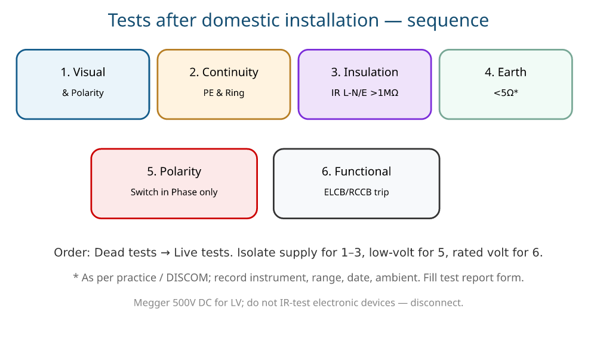
ક્રમ: પહેલા dead tests, પછી live tests. Supply isolate કરો.
| Test | કેવી રીતે / pass limit |
|---|---|
| 1. Visual & Polarity | DB dressing, ferrules, grommets, Switch માત્ર phase માં, colour code (Red/Yellow/Blue–Black–Green), accessible joints નહીં તપાસો. |
| 2. Continuity (PE & Ring) | Low-ohm meter ≤1Ω PE માટે; ring continuity cross-check; દરેક point earthed છે તે verify કરો. |
| 3. Insulation Resistance (IR) | Megger 500V DC mains OFF, બધા loads/bulbs disconnect, Switches ON. L–N, L–E, N–E દરેક ≥1MΩ (LV). નોંધો. |
| 4. Earth Electrode Resistance | Fall-of-potential tester; domestic ≤5Ω (કેટલીક DISCOM ≤1Ω); દરેક electrode પર માપો. |
| 5. Polarity (live check) | Switch phase ને control કરે, Edison holder નો centre contact phase છે, socket phase સાચા pin પર છે તે prove કરો. |
| 6. Functional | ELCB/RCCB 30mA પર ≤40ms માં trip (test button + ramp test); MCBs ON/OFF, lamps/fans ચાલે, દૂરના point પર voltage 3% અંદર. |
Report: Test report form માં client, site, DB schedule, instrument serial, readings, defects, signature ભરો. કોઈપણ test fail થાય તો energisation નહીં — rectify કરી retest કરો.
Q.2 (a) OR Explain selection of conductor size based on load requirement in domestic wiring. (3 marks)Q.2 (a) OR Explain selection of conductor size based on load requirement in domestic wiring. (3 marks)3 marks૦૩ ગુણ
Conductor size chosen so Ib ≤ Iz and voltage-drop within limit.
- Calculate Ib: Ib = P/(V·cosφ) per circuit (or I=S/V). Use actual appliance input, not light-point count alone.
- Rating Iz: From table (PVC Cu in conduit, 30°C): 1.5mm²→16A, 2.5mm²→22A, 4mm²→28A, 6mm²→36A — derate for temp/grouping/harmonics per NEC.
- Voltage-drop: VD ≈ (mV/A/m)·Ib·length /1000 ≤3% lighting (6.9V at 230V) / ≤5% power; increase size if longer route.
Example: 18A load → choose 4mm² (28A) to satisfy Iz and VD for 20m route (≈8V → need 6mm² if strict 3%). Always check earth loop & short-circuit let-through too.
Conductor size એવી રીતે પસંદ કરો કે Ib ≤ Iz અને voltage-drop મર્યાદામાં રહે.
- Ib ગણો: દરેક circuit માટે Ib = P/(V·cosφ) (અથવા I=S/V). Actual appliance input વાપરો, માત્ર light-point count નહીં.
- Rating Iz: Table થી (PVC Cu conduit માં, 30°C): 1.5mm²→16A, 2.5mm²→22A, 4mm²→28A, 6mm²→36A — temp/grouping/harmonics માટે NEC પ્રમાણે derate કરો.
- Voltage-drop: VD ≈ (mV/A/m)·Ib·length /1000 ≤3% lighting (230V પર 6.9V) / ≤5% power; route લાંબો હોય તો size વધારો.
ઉદાહરણ: 18A load → 4mm² (28A) પસંદ કરો જેથી Iz અને 20m route માટે VD (≈8V → strict 3% હોય તો 6mm² જોઈએ) બંને satisfy થાય. હંમેશા earth loop & short-circuit let-through પણ ચકાસો.
Q.2 (b) OR Illustrate format of electrical test report for domestic installation. (4 marks)Q.2 (b) OR Illustrate format of electrical test report for domestic installation. (4 marks)4 marks૦૪ ગુણ
| Electrical Test Report — Domestic (LV) — to be filled on site | |
|---|---|
| Client / Site: | _____ Date: _____ Supply: 230V 1ph / 415V 3ph |
| DB / circuits: | No. __ / Description __ / MCB __A / Cable __mm² / Length __m |
| Tests | Instrument / Range / Reading / Limit / Pass? |
| 1 Continuity PE (Ω) | Megohm/low-ohm __ / ≤1Ω / __ |
| 2 IR L–N / L–E / N–E (MΩ) | 500V DC __ / ≥1MΩ / __ |
| 3 Earth electrode (Ω) | Fall-potential __ / ≤5Ω / __ |
| 4 Polarity & phase sequence | Visual + tester __ / correct / __ |
| 5 ELCB trip (mA/ms) | RCD tester __ / 30mA ≤40ms / __ |
| 6 Voltage at far point (V) | Multimeter __ / 230V ±3% / __ |
| Defects / remarks: | _________________________ Tested by ____ Sign ______ |
Note: Attach single-line diagram, DB schedule, earth pit location. Keep for DISCOM submission & 5-year record.
| Electrical Test Report — Domestic (LV) — site પર ભરવાનો | |
|---|---|
| Client / Site: | _____ તારીખ: _____ Supply: 230V 1ph / 415V 3ph |
| DB / Circuits: | નં. __ / વર્ણન __ / MCB __A / Cable __mm² / Length __m |
| Tests | Instrument / Range / Reading / Limit / Pass? |
| 1 Continuity PE (Ω) | Megohm/low-ohm __ / ≤1Ω / __ |
| 2 IR L–N / L–E / N–E (MΩ) | 500V DC __ / ≥1MΩ / __ |
| 3 Earth Electrode (Ω) | Fall-potential __ / ≤5Ω / __ |
| 4 Polarity & Phase Sequence | Visual + Tester __ / correct / __ |
| 5 ELCB Trip (mA/ms) | RCD Tester __ / 30mA ≤40ms / __ |
| 6 દૂરના Point પર Voltage (V) | Multimeter __ / 230V ±3% / __ |
| ખામીઓ / નોંધ: | _________________________ Test કરનાર ____ Sign ______ |
નોંધ: Single-line diagram, DB schedule, earth pit location સાથે રાખો. DISCOM submission & 5-year record માટે સાચવો.
Q.2 (c) OR A 2BHK flat load given: Hall 2L+2F+1×5A, Bed1 1L+1F+1×5A, Bed2 1L+1F+1×5A+AC 2000W, Kitchen 1L+1F+1×15A 1500W, Bathroom 1L+1×5A. Calculate total load, current, light/fan & power sub-circuits, MCB sizes, SLD. (7 marks)Q.2 (c) OR A 2BHK flat load given: Hall 2L+2F+1×5A, Bed1 1L+1F+1×5A, Bed2 1L+1F+1×5A+AC 2000W, Kitchen 1L+1F+1×15A 1500W, Bathroom 1L+1×5A. Calculate total load, current, light/fan & power sub-circuits, MCB sizes, SLD. (7 marks)7 marks૦૭ ગુણ
Assumed unit loads: Light 60W, Fan 80W, 5A socket 100W (if not given). AC 2000W given, Kitchen power 1500W given.
Point count:
- Hall: 2L+2F+1×5A = 5 points, 2×60+2×80+100=380W
- Bed1: 1L+1F+1×5A =3 pts, 60+80+100=240W
- Bed2: 1L+1F+1×5A+2000W AC =3 pts+2000W, 240+2000=2240W
- Kitchen: 1L+1F+1×15A 1500W =3 pts, 240+1500=1740W
- Bath: 1L+1×5A =2 pts, 160W
Sub-circuits (classroom rule): Light/fan/5A: points 15 → ceil(15/10)=2, load (15 pts load =1260W) →1260/800=1.57→2 → 2 light sub-circuits. Power: AC 2000W (dedicated) + Kitchen 1500W =2 points, load 3500W →3500/3000=1.16→2 → 2 power sub-circuits (AC dedicated 16A, Kitchen dedicated 16A).
Current: I =4760/(230×0.8 if PF mixed)≈25.9A; at pf 1 →20.7A. Use design ≈26A.
MCB: Light sub-circuits 6A each (1.5mm²), Power 16A each (2.5mm²) — MCB curves: B-type. Main MCB 32A DP + 30mA RCCB (since Ib 26A <32A); incomer cable 4mm² Cu /6mm² Al. Suggest spare 1 sub-circuit.
SLD: Energy meter →32A Main MCB → RCCB → Busbar → 2×6A light feeders to Hall/Bed/Bath + 2×16A power feeders to AC & Kitchen. Each feeder via MCB to respective room distribution. Earthing 2 pits bonded.
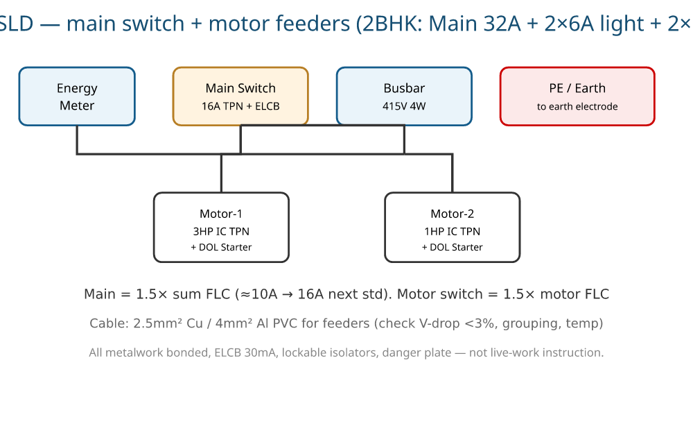
ધારેલા Unit Loads: Light 60W, Fan 80W, 5A Socket 100W (ન આપેલ હોય તો). AC 2000W આપેલ, Kitchen Power 1500W આપેલ.
Point Count:
- Hall: 2L+2F+1×5A =5 points, 2×60+2×80+100=380W
- Bed1: 1L+1F+1×5A =3 pts, 60+80+100=240W
- Bed2: 1L+1F+1×5A+2000W AC =3 pts+2000W, 240+2000=2240W
- Kitchen: 1L+1F+1×15A 1500W =3 pts, 240+1500=1740W
- Bath: 1L+1×5A =2 pts, 160W
Sub-circuits (classroom નિયમ): Light/fan/5A: 15 points → ceil(15/10)=2, load 1260W →1260/800=1.57→2 → 2 Light sub-circuits. Power: AC 2000W (dedicated) + Kitchen 1500W =2 points, load 3500W →3500/3000=1.16→2 → 2 Power sub-circuits (AC dedicated 16A, Kitchen dedicated 16A).
Current: I =4760/(230×0.8)≈25.9A; pf 1 હોય તો 20.7A. Design ≈26A લો.
MCB: Light sub-circuits 6A દરેક (1.5mm²), Power 16A દરેક (2.5mm²) — B-type curves. Main MCB 32A DP + 30mA RCCB (Ib 26A <32A); incomer Cable 4mm² Cu /6mm² Al. 1 spare sub-circuit રાખવાની ભલામણ.
SLD: Energy Meter →32A Main MCB → RCCB → Busbar → 2×6A Light feeders Hall/Bed/Bath તરફ + 2×16A Power Feeders AC & Kitchen તરફ. દરેક Feeder MCB દ્વારા respective Room Distribution તરફ. Earthing 2 pits bonded.
Q3 · Industrial wiring and motor currents
Q.3 (a) Calculate full load current and starting current of 10HP, 415V, 3-phase Induction motor. pf=0.8 lag, efficiency=80%. (3 marks)Q.3 (a) Calculate full load current and starting current of 10HP, 415V, 3-phase Induction motor. pf=0.8 lag, efficiency=80%. (3 marks)3 marks૦૩ ગુણ
Given: Pout=10HP=10×735.5=7355W, VL=415V 3-ph, η=0.8, cosφ=0.8.
Using Pout formula: I = Pout/(√3·VL·η·cosφ) same.
Check: Single-phase not √3. If 10HP mis-read as kW, answer ~21.7× bigger — so convert HP correctly.
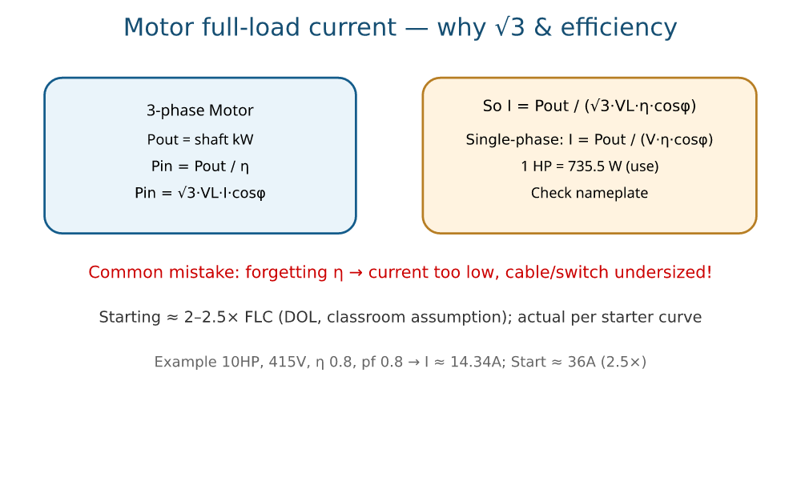
આપેલ: Pout=10HP=10×735.5=7355W, VL=415V 3-ph, η=0.8, cosφ=0.8.
Pout Formula થી: I = Pout/(√3·VL·η·cosφ) એ જ.
તપાસ: Single-phase માં √3 નહીં. 10HP ને kW સમજવાની ભૂલ કરશો તો જવાબ ~21.7× મોટો આવશે — તેથી HP ને બરાબર convert કરો.
Q.3 (b) Explain IE rules for Industrial wiring. (4 marks)Q.3 (b) Explain IE rules for Industrial wiring. (4 marks)4 marks૦૪ ગુણ
Key IE (now Electricity Act 2003 + CEA Regulations) rules for industrial wiring:
- System & earthing: 3-ph 415V/3.3kV etc with distinct neutral & protective earth; double earthing for motors ≥5HP; earth resistance ≤5Ω (industrial ≤1Ω preferred); bonded metalwork.
- Isolation & switching: Lockable TPN main switch near entrance + local isolator for each motor/machine; emergency stop within reach; starter with overload + short-circuit protection (DOL/Star-Delta per rating).
- Conductors & protection: Size by continuous Ib, starting dip (<10%), grouping/temperature derating; separate power/light circuits; cable armour bonded; no joints in inaccessible places; flame-retardant/ armoured in harsh areas.
- Safety: Danger notices in local language, fire extinguishers (CO₂), insulating mats, enclosed live parts (IP2X), testing before energisation — IR, earth, polarity, functional; maintain test record & drawings at site.
Follow NEC 2023 / IS 732, factory inspector approvals for hazardous areas (FLP enclosures if needed).
Industrial wiring માટે મુખ્ય IE (હવે Electricity Act 2003 + CEA Regulations) નિયમો:
- System & Earthing: 3-ph 415V/3.3kV વગેરે distinct neutral & protective earth સાથે; ≥5HP Motors માટે double earthing; earth resistance ≤5Ω (industrial ≤1Ω પસંદગી); બધી metalwork bonded.
- Isolation & Switching: Entrance પાસે lockable TPN Main Switch + દરેક Motor/Machine માટે local Isolator; reach માં emergency stop; Starter overload + short-circuit protection સાથે (rating પ્રમાણે DOL/Star-Delta).
- Conductors & Protection: Continuous Ib, starting dip (<10%), grouping/temperature derating પ્રમાણે Size; power/light circuits અલગ; Cable armour bonded; inaccessible જગ્યાએ joints નહીં; harsh areas માં flame-retardant/ armoured.
- Safety: Local language માં danger notices, fire extinguishers (CO₂), insulating mats, live parts enclosed (IP2X), energisation પહેલા testing — IR, earth, polarity, functional; site પર test record & drawings રાખો.
NEC 2023 / IS 732 follow કરો, hazardous areas માટે factory inspector approvals (જરૂર હોય તો FLP enclosures).
Q.3 (c) In workshop 20m×10m×5m, two Squirrel Cage motors: a) 3HP 415V 3-ph 50Hz and b) 1HP 415V 3-ph 50Hz. Calculate rating of main switch and motor switch, draw SLD. η=85%, cosφ=0.85. (7 marks)Q.3 (c) In workshop 20m×10m×5m, two Squirrel Cage motors: a) 3HP 415V 3-ph 50Hz and b) 1HP 415V 3-ph 50Hz. Calculate rating of main switch and motor switch, draw SLD. η=85%, cosφ=0.85. (7 marks)7 marks૦૭ ગુણ
Motor FLC each (same as Q3a, η=0.85, pf=0.85):
Motor switches (local ICDP/TPN isolator + DOL starter):
- 3HP motor switch 1.5×4.25=6.37A → 16A TPN motor switch / SFU (standard 16A next) + DOL starter 9A coil with OLR set at FLC 4.25A.
- 1HP →1.5×1.42=2.13A → 16A TPN (smallest standard) + DOL starter 9A, OLR 1.5–2.5A.
Cable: Feeders 2.5mm² Cu PVC (or 4mm² Al) for both (voltage-drop <3% for <30m). Earth: 2 nos. pipe/plate, loop to all frames.
SLD: Supply → Energy meter → 16A TPN Main switch/ELCB → 415V Busbar → Branch1 to 16A Motor-1 switch→ DOL → 3HP Motor; Branch2 to 16A Motor-2 switch→ DOL →1HP Motor. Show workshop lighting DB separately from power bus (if any).
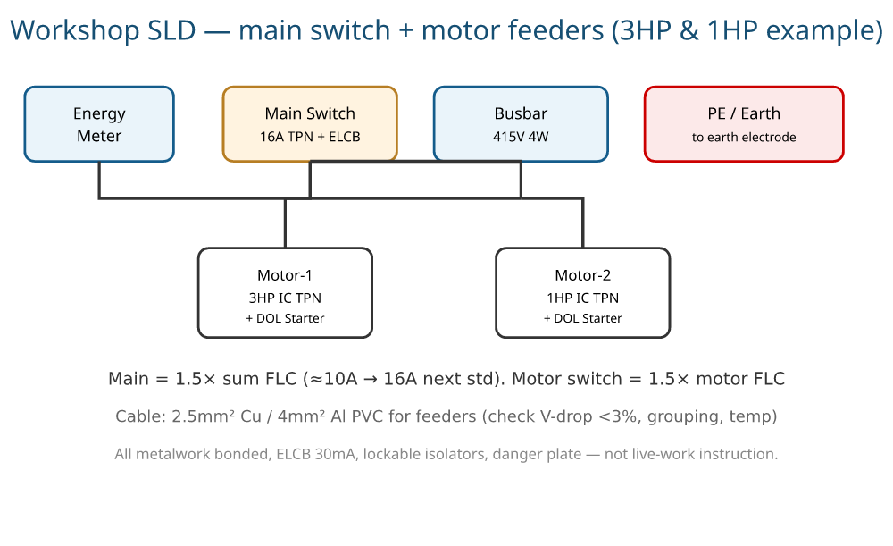
દરેક Motor FLC (Q3a જેવું, η=0.85, pf=0.85):
Motor Switches (local ICDP/TPN Isolator + DOL Starter):
- 3HP Motor Switch 1.5×4.25=6.37A → 16A TPN Motor Switch / SFU (standard 16A) + DOL Starter 9A coil OLR 4.25A પર set.
- 1HP →1.5×1.42=2.13A → 16A TPN (સૌથી નાનો standard) + DOL Starter 9A, OLR 1.5–2.5A.
Cable: Feeders 2.5mm² Cu PVC (અથવા 4mm² Al) બંને માટે (30m સુધી voltage-drop <3%). Earth: 2 નંગ pipe/plate, બધા frames ને loop.
SLD: Supply → Energy Meter → 16A TPN Main Switch/ELCB → 415V Busbar → Branch1 16A Motor-1 Switch→ DOL → 3HP Motor; Branch2 16A Motor-2 Switch→ DOL →1HP Motor. Workshop lighting DB (જો હોય તો) power bus થી અલગ બતાવો.
Q.3 (a) OR Calculate FLC and starting current of 20HP, 415V, 3-ph motor. pf=0.85, η=85%. (3 marks)Q.3 (a) OR Calculate FLC and starting current of 20HP, 415V, 3-ph motor. pf=0.85, η=85%. (3 marks)3 marks૦૩ ગુણ
Note 20HP is heavy — star-delta starter used → starting ~1× FLC (≈28A) due to reduced voltage.
નોંધ 20HP ભારે છે — star-delta starter વપરાય → reduced voltage થી starting ~1× FLC (≈28A).
Q.3 (b) OR Explain formula for finding FLC of single-phase and three-phase Induction Motor. (4 marks)Q.3 (b) OR Explain formula for finding FLC of single-phase and three-phase Induction Motor. (4 marks)4 marks૦૪ ગુણ
Derivation: Output Pout (W, shaft). Input Pin = Pout/η. Electrically Pin = V·I·cosφ (1-ph) or √3·VL·I·cosφ (3-ph).
Units: If Pout in kW, use 1000×kW. 1HP=0.7355kW. Example 5HP 230V 1-ph η0.8 pf0.8 → I=3677/(230×0.8×0.8)=24.97A. For 3-ph same kW, divide by √3·VL ≈ lower.
Always include η — shaft output ≠ electrical input. Starting and cable sizing separate.

Derivation: Output Pout (W, shaft). Input Pin = Pout/η. Electrically Pin = V·I·cosφ (1-ph) અથવા √3·VL·I·cosφ (3-ph).
Units: Pout kW માં હોય તો 1000×kW વાપરો. 1HP=0.7355kW. ઉદા. 5HP 230V 1-ph η0.8 pf0.8 → I=3677/(230×0.8×0.8)=24.97A. 3-ph એ જ kW માટે √3·VL થી divide → ઓછો.
હંમેશા η ઉમેરો — shaft output ≠ electrical input. Starting અને Cable sizing અલગ ચકાસો.
Q.3 (c) OR In workshop 20m×10m×5m two motors: a) 10HP 415V and b) 20HP 415V 3-ph 50Hz. Calculate main switch and motor switch, SLD. η=80%, pf=0.80. (7 marks)Q.3 (c) OR In workshop 20m×10m×5m two motors: a) 10HP 415V and b) 20HP 415V 3-ph 50Hz. Calculate main switch and motor switch, SLD. η=80%, pf=0.80. (7 marks)7 marks૦૭ ગુણ
FLC (η0.8, pf0.8, denominator =1.732×415×0.8×0.8=460):
Motor switches: 10HP 1.5×20=30A → 32A TPN + 25A DOL/Star-Delta (Star-Delta preferred for 10HP to limit start). 20HP 1.5×40=60A → 63A TPN + 45A Star-Delta starter. OLR set at FLC.
Cable: 10HP 4mm² Cu (25A), 20HP 10mm² Cu (45A) — check derating. Lay in GI pipe/trench, separate power & control.
SLD same ladder as before but with 100A mains and star-delta symbols.
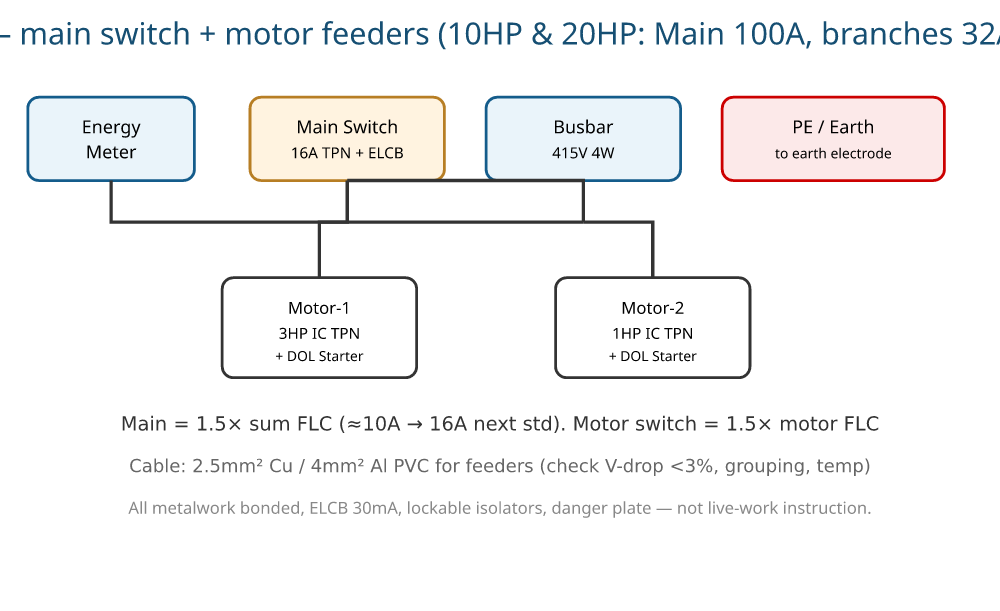
FLC (η0.8, pf0.8, denominator =1.732×415×0.8×0.8=460):
Motor Switches: 10HP 1.5×20=30A → 32A TPN + 25A DOL/Star-Delta (10HP માટે start limit કરવા Star-Delta પસંદગી). 20HP 1.5×40=60A → 63A TPN + 45A Star-Delta Starter. OLR FLC પર set.
Cable: 10HP 4mm² Cu (25A), 20HP 10mm² Cu (45A) — derating ચકાસો. GI pipe/trench માં, power & control અલગ.
SLD એ જ ladder પરંતુ 100A mains અને star-delta symbols સાથે.
Q4 · Distribution, insulators and estimation
Q.4 (a) Explain reasons for failure of line insulators. (3 marks)Q.4 (a) Explain reasons for failure of line insulators. (3 marks)3 marks૦૩ ગુણ
- Electrical: Flashover from lightning/switching overvoltage, pollution-induced tracking, corona cut — exceeds creepage/breakdown.
- Mechanical: Vibration (aeolian), wind, ice load, gunshot/vandalism, poor handling (hairline cracks), cement expansion (porcelain pin corrosion).
- Environmental: Salt, dust, cement, bird droppings → conductive layer; acid/alkali fumes attack glaze; thermal cycling cracks.
- Ageing: Loss of hydrophobicity (polymer), cement deterioration, hardware corrosion.
Prevent: correct creepage (16-31mm/kV by pollution), washing, RTV coating, polymer for heavy pollution, arcing horns.
- Electrical: Lightning/switching overvoltage થી flashover, pollution-induced tracking, corona cut — creepage/breakdown થી વધુ.
- Mechanical: Vibration (aeolian), wind, ice load, vandalism, ખરાબ handling (hairline cracks), cement expansion (porcelain pin corrosion).
- પર્યાવરણીય: મીઠું, ધૂળ, cement, bird droppings → conductive layer; acid/alkali fumes glaze ને નુકસાન; thermal cycling થી cracks.
- Ageing: Hydrophobicity ઘટવી (polymer), cement deterioration, hardware corrosion.
નિવારણ: યોગ્ય creepage (pollution પ્રમાણે 16-31mm/kV), washing, RTV coating, ભારે pollution માટે polymer, arcing horns.
Q.4 (b) Compare between overhead and underground distribution system. (4 marks)Q.4 (b) Compare between overhead and underground distribution system. (4 marks)4 marks૦૪ ગુણ
| Aspect | Overhead (OH) | Underground (UG) |
|---|---|---|
| Cost | Low (poles, ACSR/AAC, insulators) — easy expansion | High: 5-10× OH (cable+trench+joint); costly repair |
| Faults | More: lightning, wind, kite, pollution — visible; quick patrol & fix | Fewer faults but hidden; dig-in faults, long locate+excavate time |
| Appearance & ROW | Wide ROW, visual clutter, EMF | Neat, narrow route under footpath — city preference |
| Performance | Exposure → sag/swing, Ferranti in long EHV; easy tapping | Thermally limited (soil), charging limits AC length; no storm exposure |
Choice: Rural/bulk → OH; Congested urban, river/rail crossing, heritage → UG despite cost.
| પાસું | Overhead (OH) | Underground (UG) |
|---|---|---|
| Cost | ઓછી (poles, ACSR/AAC, insulators) — expansion સરળ | વધારે: OH કરતાં 5-10× (cable+trench+joint); repair મોંઘો |
| Faults | વધુ: lightning, wind, kite, pollution — દેખાય; ઝડપી patrol & fix | Faults ઓછા પણ hidden; dig-in faults, locate+excavate લાંબો સમય |
| Appearance & ROW | પહોળું ROW, visual clutter, EMF | સુઘડ, footpath નીચે સાંકડો route — શહેરમાં પસંદગી |
| Performance | Exposure → sag/swing, લાંબા EHV માં Ferranti; tapping સરળ | Thermally limited (soil), charging થી AC length મર્યાદા; storm exposure નહીં |
પસંદગી: Rural/bulk → OH; ગીચ urban, river/rail crossing, heritage → cost છતાં UG.
Q.4 (c) Explain different types of insulators with neat sketches. (7 marks)Q.4 (c) Explain different types of insulators with neat sketches. (7 marks)7 marks૦૭ ગુણ
Purpose: isolate live from tower/earth + carry mechanical load.
| Type | Features / use |
|---|---|
| Pin | One-piece on steel pin; up to 33kV (11kV one disc, 33kV taller). P-skirts increase creepage. Brittle beyond 33kV. |
| Suspension (disc) string | Porcelain/glass/polymer discs (11kV per disc). Flexible, EHV choice; grading ring >132kV. String efficiency concept. |
| Strain / tension | Horizontal disc string at dead-ends/angles — takes full tension; uses stronger discs & hardware. |
| Shackle / spool | LV 400V distribution poles — D-shaped porcelain with tie wire; simple, cheap. |
| Stay / egg | In guy wire — breaks electrical path to ground so stay not live. |
Materials: glazed porcelain (strong, cheap), toughened glass (self-revealing failure), polymer-silicone composite (light, hydrophobic, pollution-proof — EHV modern). Include arcing horns for flashover protection.
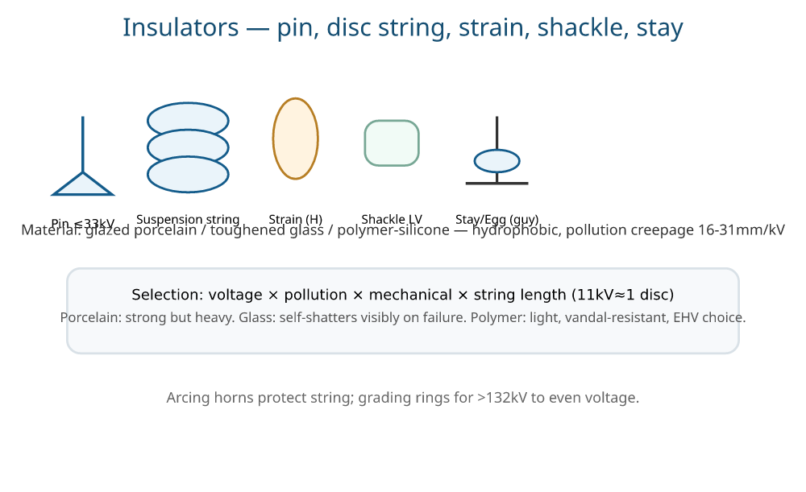
હેતુ: live ને tower/earth થી isolate કરવા + mechanical load વહન.
| પ્રકાર | લાક્ષણિકતા / ઉપયોગ |
|---|---|
| Pin | Steel pin પર one-piece; 33kV સુધી (11kV એક disc, 33kV ઊંચો). P-skirts creepage વધારે. 33kV થી brittle. |
| Suspension (disc) String | Porcelain/glass/polymer discs (11kV પ્રતિ disc). Flexible, EHV પસંદગી; >132kV grading ring. String efficiency concept. |
| Strain / Tension | Dead-ends/angles પર horizontal disc string — પૂરો tension લે; વધુ મજબૂત discs & hardware. |
| Shackle / Spool | LV 400V distribution poles — tie wire સાથે D-shaped porcelain; સરળ, સસ્તું. |
| Stay / Egg | Guy wire માં — ground સુધી electrical path break કરે જેથી stay live ન થાય. |
Materials: glazed porcelain (મજબૂત, સસ્તું), toughened glass (failure સ્વયં દેખાય), polymer-silicone composite (હળવું, hydrophobic, pollution-proof — EHV આધુનિક). Flashover protection માટે arcing horns.
Q.4 (a) OR Draw main components of three-phase four-wire distribution system. (3 marks)Q.4 (a) OR Draw main components of three-phase four-wire distribution system. (3 marks)3 marks૦૩ ગુણ
Components (415/230V LV):
- Distribution Transformer (11kV/415V) with DO fuse/lighting arrester, earth.
- Main/feeder pillar — TPN switch/MCCB, busbars R-Y-B-N.
- Distributor — 4-wire OH (ABC cable or bare ACSR/AAC) or UG cable, with stay at angles, earth wire.
- Service mains — tapping via connector to energy meter + cut-out (1-ph 5/10/32A or 3-ph 63A) at consumer.
Balanced phasing + neutral earthed at DT and every 4th pole. Provide colour dots (R-yellow, Y-red, B-blue).
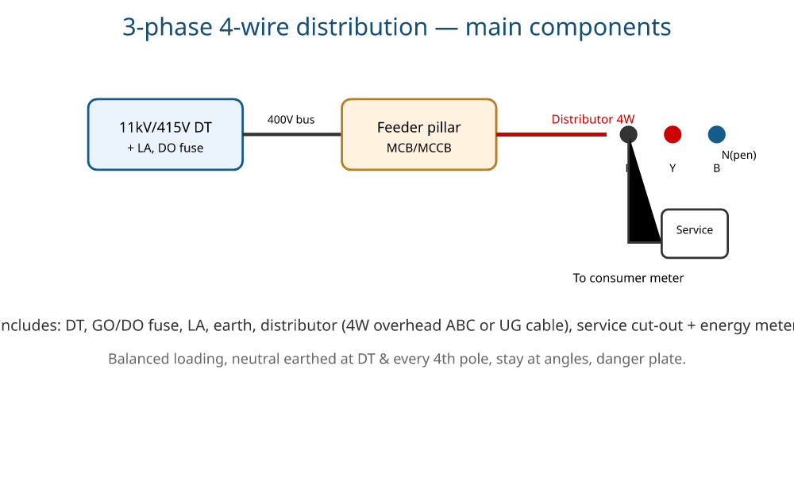
Components (415/230V LV):
- Distribution Transformer (11kV/415V) DO fuse/lighting arrester, earth સાથે.
- Main/Feeder Pillar — TPN Switch/MCCB, busbars R-Y-B-N.
- Distributor — 4-wire OH (ABC Cable અથવા bare ACSR/AAC) અથવા UG Cable, angles પર stay, earth wire.
- Service Mains — Connector દ્વારા energy meter + cut-out (1-ph 5/10/32A અથવા 3-ph 63A) સુધી tapping.
Balanced phasing + DT અને દર 4th pole પર neutral earthed. Colour dots (R-yellow, Y-red, B-blue) આપો.
Q.4 (b) OR Draw sketch of stay set for overhead distribution system. (4 marks)Q.4 (b) OR Draw sketch of stay set for overhead distribution system. (4 marks)4 marks૦૪ ગુણ
Purpose: guy the pole against unbalanced tension at angles, terminals, and every 8–10th straight pole.
Parts (top to bottom): Pole clamp → stay bow → thimble → stay wire (7/8 G.I. twisted, 7-strand) → egg insulator (at ~3m height, breaks live path) → turnbuckle/adjuster → anchor rod (19mm MS, 1.5–1.8m) → base plate/anchor block (600×600×300 concrete) buried 1.5m. Angle 30–45° to ground, opposite pull direction. Strain on stay ≈ tension × cosθ.
Install opposite resultant pull; earth the anchor separately. On rocky ground use rock anchor; in field use fan/plate anchor.
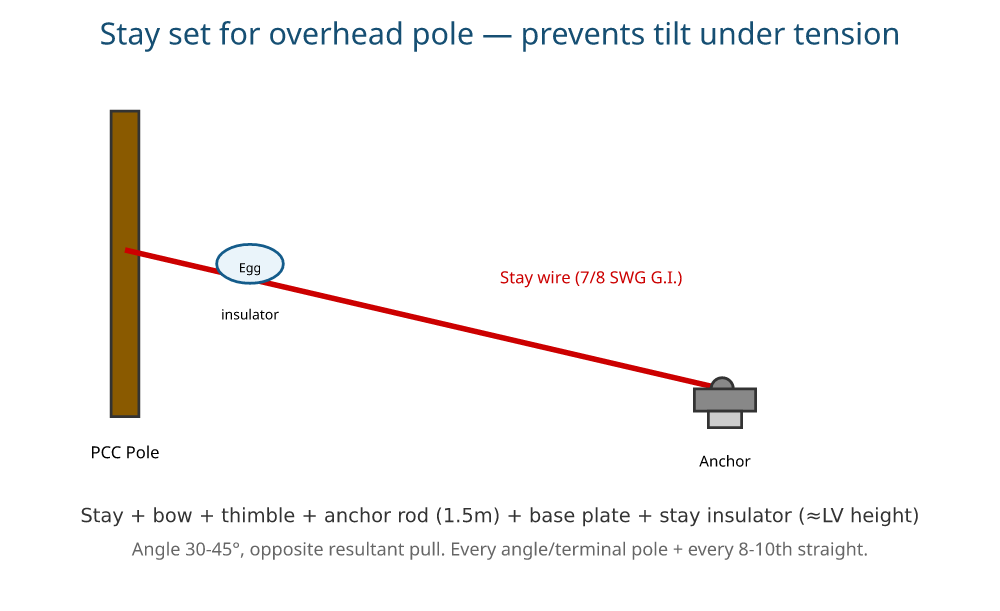
હેતુ: angles, terminals અને દર 8–10મા straight pole પર unbalanced tension સામે pole ને guy કરવું.
ભાગો (ઉપરથી નીચે): Pole Clamp → Stay Bow → Thimble → Stay Wire (7/8 G.I. twisted, 7-strand) → Egg Insulator (~3m height પર, live path break કરે) → Turnbuckle/Adjuster → Anchor Rod (19mm MS, 1.5–1.8m) → Base Plate/Anchor Block (600×600×300 concrete) 1.5m દાટેલ. Ground થી ખૂણો 30–45°, pull direction થી વિરુદ્ધ. Stay પર strain ≈ tension × cosθ.
Resultant pull થી વિરુદ્ધ install કરો; anchor ને અલગ earth કરો. Rocky ground પર rock anchor; field માં fan/plate anchor.
Q.4 (c) OR One 400V, 3-phase 4-wire 50Hz OH distribution line 720m long, 60m span. Use AAC 3/3.66mm line conductor and 8 SWG G.I. neutral/earth wire. Take PCC pole, estimate total material required. (7 marks)Q.4 (c) OR One 400V, 3-phase 4-wire 50Hz OH distribution line 720m long, 60m span. Use AAC 3/3.66mm line conductor and 8 SWG G.I. neutral/earth wire. Take PCC pole, estimate total material required. (7 marks)7 marks૦૭ ગુણ
Given: 400V 4W, length 720m, span 60m, conductor AAC 3/3.66mm (approx 25mm²), neutral/earth 8 SWG G.I. (4mm dia), PCC pole (reinforced concrete).
1. Poles: 720/60=12 spans → 13 poles (including both ends). Add 2 terminal/angle if bend — assume straight. Use 13 PCC poles 9m (150×150mm), 1.5m depth, PCC coping. Each with 4 shackle insulators + clamps for 4 wires if LV OH on shackle.
2. Conductors: Line (R,Y,B) 3×720m =2160m running; add sag (3%) + joints/wastage 5% →2160×1.08≈2333m of AAC. Neutral + Earth (G.I. 8SWG) 2×720×1.08≈1555m.
3. Accessories: Each pole 4 shackle insulators (13×4=52) + D-clamps; binding wire 8 SWG Al 5kg; stay sets at terminations + every 8th pole → 4 stays (2 ends + 2 intermediate) with egg, anchor, base plate, G.I. wire (7/8). Earth: 2 earth electrodes (pipe/plate) with 8 SWG GI earth wire loop, danger plates 13 nos., phase plates, anti-climbing guards, number plates.
4. Other: Joint sleeves if conductor drums 500m (5 joints/phase →15 sleeves); caution boards at road crossings; concreting 0.3m³ per pole. Costing not asked — but quantities × rate + 10% labour + 3% contingency + supervision 15% for estimate. Provide tabular quantity schedule for exam.
આપેલ: 400V 4W, લંબાઈ 720m, span 60m, Conductor AAC 3/3.66mm (આશરે 25mm²), Neutral/Earth 8 SWG G.I. (4mm dia), PCC Pole.
1. Poles: 720/60=12 spans → 13 Poles (બંને છેડા સહિત). જો વળાંક હોય તો 2 Terminal/Angle ઉમેરો — અહીં straight ધારો. 13 PCC Poles 9m (150×150mm), 1.5m depth, PCC coping. દરેક પર 4 Shackle Insulators + Clamps 4 Wires માટે.
2. Conductors: Line (R,Y,B) 3×720m =2160m running; sag (3%) + joints/wastage 5% ઉમેરો →2160×1.08≈2333m AAC. Neutral + Earth (G.I. 8SWG) 2×720×1.08≈1555m.
3. Accessories: દરેક Pole 4 Shackle Insulators (13×4=52) + D-Clamps; Binding Wire 8 SWG Al 5kg; Stay Sets Terminations + દર 8મા Pole પર → 4 Stays (2 Ends + 2 Intermediate) Egg, Anchor, Base Plate, G.I. Wire સાથે. Earth: 2 Earth Electrodes pipe/plate સાથે 8 SWG GI Earth Wire Loop, Danger Plates 13 નંગ, Phase Plates, Anti-climbing Guards, Number Plates.
4. Other: જો Conductor Drums 500m હોય તો Joint Sleeves (5 Joints/Phase →15 Sleeves); Road Crossings પર Caution Boards; દરેક Pole દીઠ 0.3m³ Concreting. Costing નથી પૂછ્યું — પરંતુ quantities × rate + 10% Labour + 3% Contingency + Supervision 15% Estimate માટે. પરીક્ષામાં tabular Quantity Schedule આપો.
Q5 · Cables and service connection
Q.5 (a) Explain with neat sketch general construction of single-core cable used for electrical wiring. (3 marks)Q.5 (a) Explain with neat sketch general construction of single-core cable used for electrical wiring. (3 marks)3 marks૦૩ ગુણ
Single-core PVC/XLPE insulated cable (300/500V or 600/1000V) used in conduit/casing wiring:
- Conductor — annealed copper (or aluminium) stranded per IS 8130; 1/1.38mm (1.5mm²) ... 19/1.78mm (50mm²). Tinned for flexible.
- Insulation — extruded PVC (70°C) or XLPE (90°C) — rated voltage, flame-retardant; colour-coded Red/Yellow/Blue (phase), Black (neutral), Green (earth).
- Sheath (optional) — unarmoured for domestic conduit; armoured (GI) for UG/industrial where mechanical protection needed.
No bedding/armour in basic domestic single-core — just conductor + insulation. Sizes chosen by Ib and VD as in Q2.
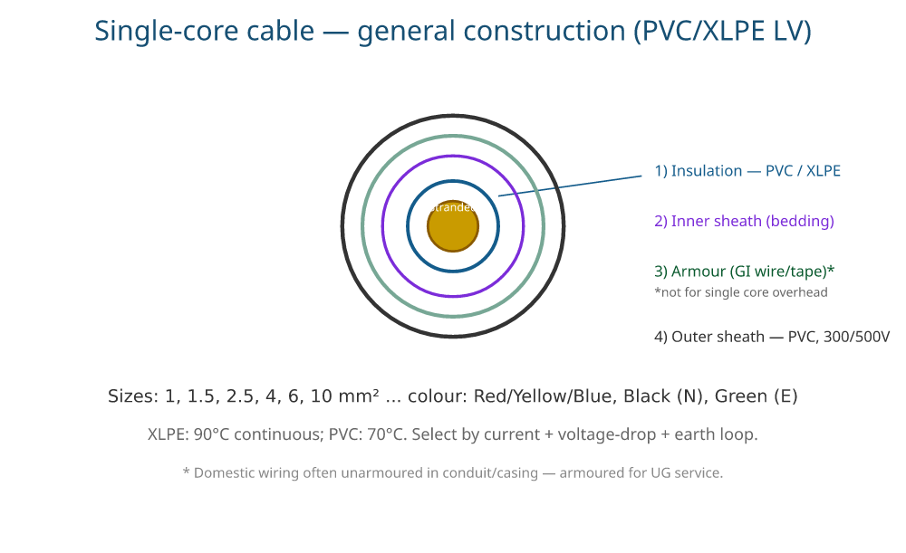
Conduit/casing wiring માં વપરાતો Single-core PVC/XLPE insulated Cable (300/500V અથવા 600/1000V):
- Conductor — IS 8130 પ્રમાણે annealed Copper (અથવા Aluminium) stranded; 1/1.38mm (1.5mm²) ... 19/1.78mm (50mm²). Flexible માટે tinned.
- Insulation — Extruded PVC (70°C) અથવા XLPE (90°C) — rated Voltage, flame-retardant; Colour-coded Red/Yellow/Blue (Phase), Black (Neutral), Green (Earth).
- Sheath (optional) — Domestic conduit માટે unarmoured; UG/Industrial જ્યાં mechanical protection જોઈએ ત્યાં armoured (GI).
Basic domestic single-core માં bedding/armour નહીં — માત્ર Conductor + Insulation. Ib અને VD પ્રમાણે Sizes પસંદ કરો (Q2 પ્રમાણે).
Q.5 (b) Explain IE rules for Service Connection. (4 marks)Q.5 (b) Explain IE rules for Service Connection. (4 marks)4 marks૦૪ ગુણ
Service connection = DISCOM line to consumer meter point — supply agreement boundary.
- Sanction & safety: Application, sanctioned load (10A here), agreement; licensed contractor only; IR & earth tests before energisation; danger notice, sealed meter.
- Metering: Meter box sealed by DISCOM, accessible, ventilated, height 1.5m; cut-out (10A for 10A service) between line and meter; neutral not fused.
- Route & clearances: OH: bearer wire, min height 3.5m over road, 2.75m verandah, away from windows, drip loop, weather-proof entry. UG: armoured cable in HDPE pipe at 0.6–0.9m depth with warning tape.
- Earthing & protection: Consumer earth electrode mandatory (≤5Ω), bonded to meter body; ELCB/RCCB on consumer side; no tapping before meter.
Service Connection = DISCOM Line થી Consumer Meter Point સુધી — supply agreement boundary.
- Sanction & Safety: Application, Sanctioned Load (અહીં 10A), Agreement; માત્ર Licensed Contractor; Energisation પહેલા IR & Earth Tests; Danger Notice, Sealed Meter.
- Metering: DISCOM દ્વારા Sealed Meter Box, accessible, ventilated, height 1.5m; Line અને Meter વચ્ચે Cut-out (10A Service માટે 10A); Neutral માં Fuse નહીં.
- Route & Clearances: OH: Bearer Wire, રસ્તા પર min height 3.5m, Verandah 2.75m, બારીઓથી દૂર, Drip Loop, Weather-proof Entry. UG: 0.6–0.9m depth પર HDPE Pipe માં Armoured Cable Warning Tape સાથે.
- Earthing & Protection: Consumer Earth Electrode ફરજિયાત (≤5Ω), Meter Body સાથે bonded; Consumer side પર ELCB/RCCB; Meter પહેલા Tapping નહીં.
Q.5 (c) 230V, 10A capacity service connection is to be given to single-floor building from 40m away 3-phase 4-wire distribution line. Draw lay out of overhead service connection. (7 marks)Q.5 (c) 230V, 10A capacity service connection is to be given to single-floor building from 40m away 3-phase 4-wire distribution line. Draw lay out of overhead service connection. (7 marks)7 marks૦૭ ગુણ
Load: 230V, 10A single-phase (2.3kW) — single-floor residence. Tap from 415V 3-ph 4W distributor.
Layout (tap to meter):
- Pole tapping: At 4W pole (R/Y/B/N+earth) — pin/shackle insulator with service bracket + G.I. bearer wire (7/12 SWG). Use fuse-cut-out on phase at pole (10A HRC) — some DISCOMs pole cut-out.
- Service cable: 2-core (phase + neutral) 4mm² Al PVC/PVC with messenger/bearer (or ABC 2×6mm²) — length 40m + 3m sag + 2m entry =45m. Bearer tied to pole clamp and house wall bracket.
- House entry: Wall bracket with insulator, lead-in pipe with bend (goose-neck) and drip loop, sealed entry into meter box (height 1.5m). Use GI pipe/HDPE for wall crossing.
- Metering: Service cut-out 10A (phase + neutral link) → single-phase energy meter (10–40A, 240V) sealed by DISCOM → consumer DB (ICDP 16A + 30mA ELCB).
- Earthing: Consumer pipe electrode near meter, connected via 8 SWG GI to meter body/DB earth bus.
Sketch shows: Distribution pole → 40m bearer + service cable → wall bracket/insulator → goose-neck → meter box. Label clearances (road 3.5m mid-span).
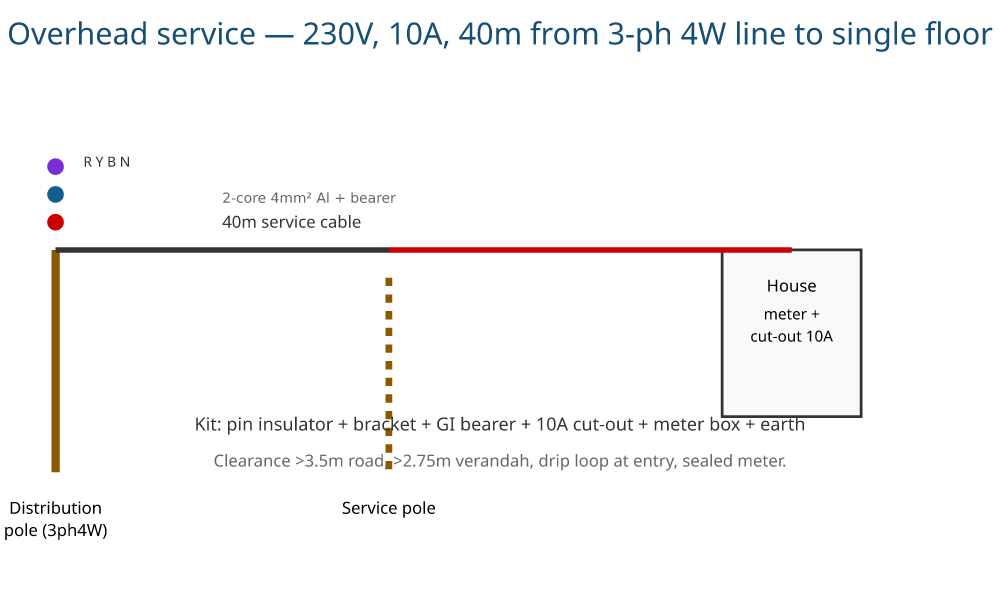
Load: 230V, 10A Single-phase (2.3kW) — એક-માળનું રહેઠાણ. 415V 3-ph 4W Distributor માંથી Tap.
Layout (tap થી meter):
- Pole Tapping: 4W Pole (R/Y/B/N+earth) પર — Pin/Shackle Insulator સાથે Service Bracket + G.I. Bearer Wire (7/12 SWG). Pole પર Phase પર Fuse-Cut-out (10A HRC) — કેટલીક DISCOMs Pole Cut-out રાખે.
- Service Cable: 2-core (Phase + Neutral) 4mm² Al PVC/PVC Messenger/Bearer સાથે (અથવા ABC 2×6mm²) — Length 40m + 3m Sag + 2m Entry =45m. Bearer Pole Clamp અને House Wall Bracket સાથે tied.
- House Entry: Insulator સાથે Wall Bracket, Bend સાથે Lead-in Pipe (Goose-neck) અને Drip Loop, Sealed Entry Meter Box માં (Height 1.5m). Wall Crossing માટે GI Pipe/HDPE વાપરો.
- Metering: Service Cut-out 10A (Phase + Neutral Link) → Single-phase Energy Meter (10–40A, 240V) DISCOM દ્વારા Sealed → Consumer DB (ICDP 16A + 30mA ELCB).
- Earthing: Meter પાસે Consumer Pipe Electrode, 8 SWG GI દ્વારા Meter Body/DB Earth Bus સાથે connected.
Sketch બતાવે છે: Distribution Pole → 40m Bearer + Service Cable → Wall Bracket/Insulator → Goose-neck → Meter Box. Clearances Label કરો (Road પર 3.5m Mid-span).
Q.5 (a) OR Explain Lightning Arrester with neat sketches. (3 marks)Q.5 (a) OR Explain Lightning Arrester with neat sketches. (3 marks)3 marks૦૩ ગુણ
LA = overvoltage diverter — high impedance at normal voltage, low impedance during surge, directs lightning/switching surge to earth, then reseals.
- Types: Rod gap (simplest: two rods with air gap, cheap but follow-current), Horn gap (arc stretches), Valve/SiC with series gaps (historical), modern Metal-oxide (ZnO) gapless MOV — nonlinear resistor: high resistance at 230/400V, conducts at surge, self-heals.
- Connection: Phase ↔ Earth at DT/line ends/tall structures. Rating by MCOV and discharge current (5/10kA). Needs excellent earth (≤10Ω) or useless.
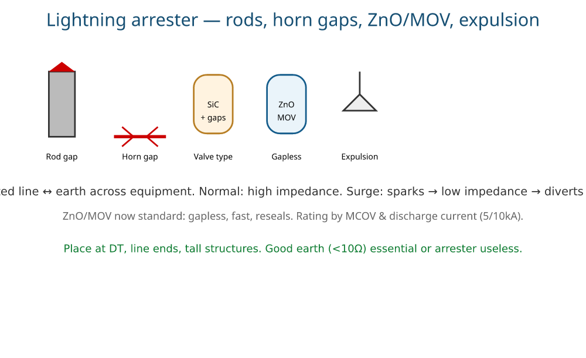
LA = overvoltage diverter — સામાન્ય Voltage પર high impedance, Surge દરમિયાન low impedance, Lightning/Switching Surge ને Earth તરફ વાળે, પછી reseal થાય.
- પ્રકારો: Rod Gap (સૌથી સરળ: air gap સાથે બે Rods, સસ્તું પણ follow-current), Horn Gap (arc ખેંચાય), Valve/SiC Series Gaps સાથે (ઐતિહાસિક), આધુનિક Metal-oxide (ZnO) Gapless MOV — Nonlinear Resistor: 230/400V પર High Resistance, Surge પર Conduct કરે, Self-heals.
- Connection: Phase ↔ Earth DT/Line Ends/ઊંચા Structures પર. Rating MCOV અને Discharge Current (5/10kA) દ્વારા. Excellent Earth (≤10Ω) જોઈએ નહિતર નકામું.
Q.5 (b) OR List properties of overhead line supports. (4 marks)Q.5 (b) OR List properties of overhead line supports. (4 marks)4 marks૦૪ ગુણ
Desirable properties (poles/towers):
- Mechanical strength: Withstand conductor tension, wind (150kg/m² zone), ice, vibration without excessive deflection; factor of safety ≥2.
- Durability: Resist corrosion, decay, UV, termites — PCC/RCC immune, steel galvanised, wood pressure-treated.
- Light weight & easy erection: Transportable, stackable; quick foundation (1.5m depth, 0.3m³ concrete for PCC).
- Economy & life: Low cost, 30–50yr life with maintenance; standardisation (PCC 8/9m, lattice A/B/C/D).
- Electrical: Adequate clearance, provision for cross-arms, insulators, stays, earthing, danger plate fixing; non-conductive surface where needed.
- Environmental: Minimum ROW, aesthetic, recyclable.
ઇચ્છનીય ગુણધર્મો (poles/towers):
- Mechanical Strength: Conductor Tension, Wind (150kg/m² Zone), Ice, Vibration વધુ પડતા deflection વગર સહન; Factor of Safety ≥2.
- Durability: Corrosion, Decay, UV, Termites સામે ટકાઉ — PCC/RCC immune, Steel Galvanised, Wood Pressure-treated.
- હળવું & સરળ Erection: Transportable, Stackable; ઝડપી Foundation (PCC માટે 1.5m Depth, 0.3m³ Concrete).
- Economy & Life: ઓછી Cost, Maintenance સાથે 30–50વર્ષ Life; Standardisation (PCC 8/9m, Lattice A/B/C/D).
- Electrical: પૂરતી Clearance, Cross-arms, Insulators, Stays, Earthing, Danger Plate Fixing માટે provision; જ્યાં જોઈએ ત્યાં Non-conductive Surface.
- પર્યાવરણીય: Minimum ROW, Aesthetic, Recyclable.
Q.5 (c) OR The distance of big building from service pole is 20m and load 6kW. To this building 230V 50Hz single-phase underground service connection is to be provided. Estimate material requirement and cost. (7 marks)Q.5 (c) OR The distance of big building from service pole is 20m and load 6kW. To this building 230V 50Hz single-phase underground service connection is to be provided. Estimate material requirement and cost. (7 marks)7 marks૦૭ ગુણ
Given: 230V 1-ph UG service, length 20m, load 6kW (⇒ Ib=6000/230≈26A at pf1; with pf 0.85 →30.7A; design 32A). Use 6kW ⇒ 32A service.
Material (20m route + allowance):
| Item | Qty |
|---|---|
| UG service cable: 2-core 10mm² Al XLPE/PVC armoured (or 6mm² Cu) — 20m +2m+3m tails =25m | 25m |
| HDPE pipe 40mm for road/wall crossing + warning tape 25m | 8m pipe +25m tape |
| Trench: 0.9m deep ×0.3m wide ×20m, sand 0.1m bed + bricks/tiles, backfill | 20 RMT |
| Service bracket/clamp, glands, lugs (10mm² ×4), ferrules | 1 set |
| Cut-out 32A (phase+fused + neutral link) + meter box (32A meter) | 1 each |
| Earth electrode (pipe) + 8 SWG GI earth wire + clamp | 1 +20m |
| Cable route markers, danger plate, number plate | 2 +1+1 |
Cost (classroom assumed rates — state as assumption, not market):
- Cable 25m×₹90=₹2250, Pipe+Tape=₹600, Trench+backfill 20m×₹80=₹1600, Glands/lugs=₹300, Cut-out+meter box=₹1200, Earth=₹700, Markers=₹200 → Material ≈₹6850.
- Labour ₹800 + Transport ₹250 → Direct ₹7900.
- Contingency 3% ₹237 + Supervision/overhead 10% ₹790 + Profit 10% ₹790 → Total ≈₹9717 + DISCOM charges/deposit extra + taxes as per SOR (declare assumption).
Note: For exam, present quantity table + cost table clearly — rates are teaching assumptions, cite source SOR/date.
આપેલ: 230V 1-ph UG Service, Length 20m, Load 6kW (⇒ Ib=6000/230≈26A pf1 પર; pf 0.85 હોય તો 30.7A; Design 32A). 6kW ⇒ 32A Service વાપરો.
Material (20m Route + Allowance):
| Item | Qty |
|---|---|
| UG Service Cable: 2-core 10mm² Al XLPE/PVC Armoured (અથવા 6mm² Cu) — 20m +2m+3m Tails =25m | 25m |
| Road/Wall Crossing માટે HDPE Pipe 40mm + Warning Tape 25m | 8m Pipe +25m Tape |
| Trench: 0.9m Deep ×0.3m Wide ×20m, 0.1m Sand Bed + Bricks/Tiles, Backfill | 20 RMT |
| Service Bracket/Clamp, Glands, Lugs (10mm² ×4), Ferrules | 1 Set |
| Cut-out 32A (Phase+Fused + Neutral Link) + Meter Box (32A Meter) | 1 દરેક |
| Earth Electrode (Pipe) + 8 SWG GI Earth Wire + Clamp | 1 +20m |
| Cable Route Markers, Danger Plate, Number Plate | 2 +1+1 |
Cost (Classroom ધારેલા Rates — Market નહીં, Assumption તરીકે લખો):
- Cable 25m×₹90=₹2250, Pipe+Tape=₹600, Trench+Backfill 20m×₹80=₹1600, Glands/Lugs=₹300, Cut-out+Meter Box=₹1200, Earth=₹700, Markers=₹200 → Material ≈₹6850.
- Labour ₹800 + Transport ₹250 → Direct ₹7900.
- Contingency 3% ₹237 + Supervision/Overhead 10% ₹790 + Profit 10% ₹790 → કુલ ≈₹9717 + DISCOM Charges/Deposit Extra + SOR (તારીખ સાથે) પ્રમાણે Taxes (Assumption જાહેર કરો).
નોંધ: પરીક્ષામાં Quantity Table + Cost Table સ્વચ્છ રીતે રજૂ કરો — Rates Teaching Assumptions છે, Source SOR/Date Cite કરો.